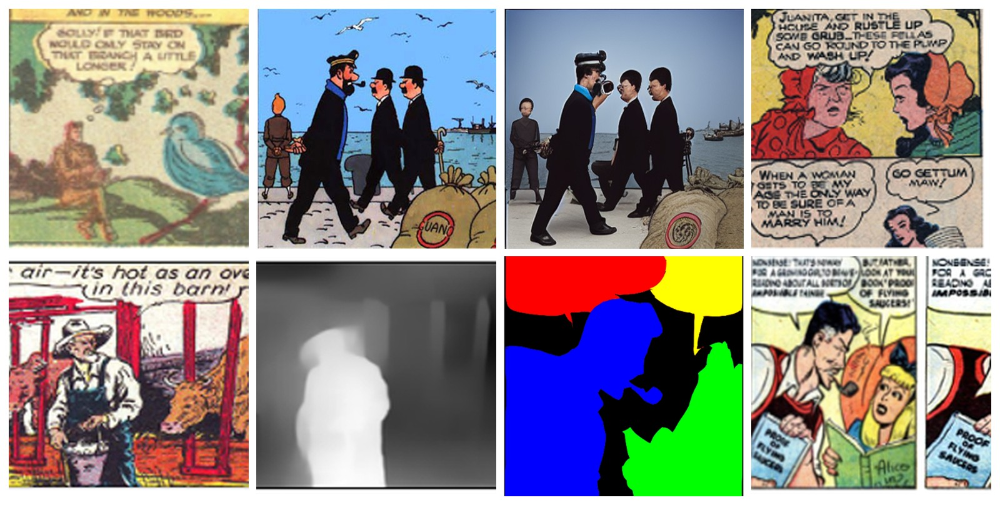

Visual arts and cultural heritage
Comics, manga, paintings and film archives break the assumptions of models trained on photographs. We build datasets and methods for depth, segmentation, saliency, retargeting and sketch-to-image generation in stylised art, and generative restoration for archives. I lead the AI for Visual Arts (AI4VA) workshop series at ECCV, ICCV and CVPR.